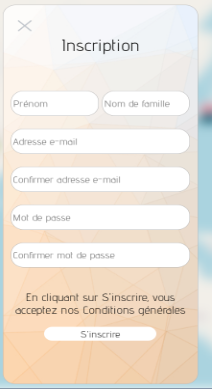
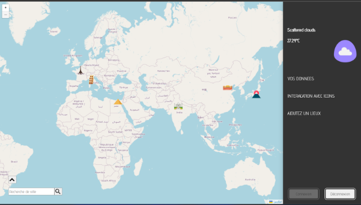

Présentation
Projet informatique : Développement en groupe de 4 d'un site d'enregistrement de lieux sur une carte avec la bibliothèque Javascript "Leaflet" relié à une base de données MySQL grâce à du PHP.
Description : Le site web permet à un utilisateur connecté de placer des points sur sa carte et d'enregistrer la position avec une description et une image. Ce système permet de ne jamais oublier là où nous sommes allés. Il y a un système de connexion et de création de compte car l'utilisateur doit obligatoirement être connecté. Le site permet également d'accéder à la météo de n'importe quel endroit sur la carte.
Objectifs : Le but de ce projet était de développer un site web qui répondait aux besoins spécifiques des professeurs dans le cadre du module de développement web. Il devait être facile à utiliser, esthétique, fiable et sécurisé.
Technologies utilisées : Le site web a été développé en utilisant les technologies suivantes : PHP, MySQL, HTML, CSS, JavaScript et la bibliothèque Leaflet pour l'affichage et les intéractions avec la carte. L'enregistrement des lieux et le système de connexion vers la base de données ont été fait en PHP grâce à la méthode PDO.
Développement : Nous avons commencé le projet en réunissant les besoins à faire absolument d'après le cahier des charges et en élaborant un plan de développement. Nous avons ensuite développé le site web en utilisant une approche itérative, en testant régulièrement les fonctionnalités pour s'assurer qu'elles répondent aux besoins. De plus, nous avons utilisé l'outil de collaboration GitHuB pour développer en simultané et chacun de son côté.
En conclusion, ce projet a été un succès grâce à une planification et une communication efficaces, une utilisation judicieuse des technologies, une approche itérative et une attention constante aux cahier des charges.

